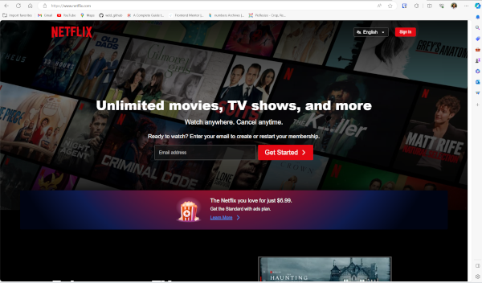
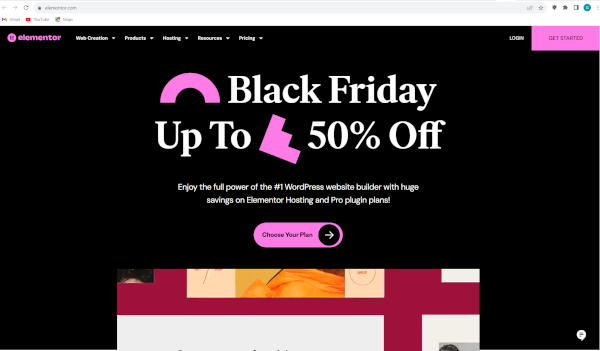

Visual Hierarchy
Microsoft
Microsoft WebsiteThe first thing I notice on their homepage is the large banner image with bold text, which immediately graps my attention, it's where they usually showcase their latest product. The site also use contrasting colors for call-to-action buttons which makes them stand out against other elements. Important information is placed higher up the page.
Hick's Law
Netflix
Netflix Website Netflix uses a simple and intuitive interface that presents users with a limited number of choices at any given time, thereby reducing decision-making time The navigation menu guides users to the information they need without overwhelming them with choices.
PARC: Contrast
Elementor
The site uses a simple but effective color scheme. The bold, contrasting colors helps important elements stand out. It also makes important elements larger than the least important. I like how the site uses a variety of shapes, textures, and layout structures to create contrast, making the the website visually interesting, and guiding users' to the most important elements.